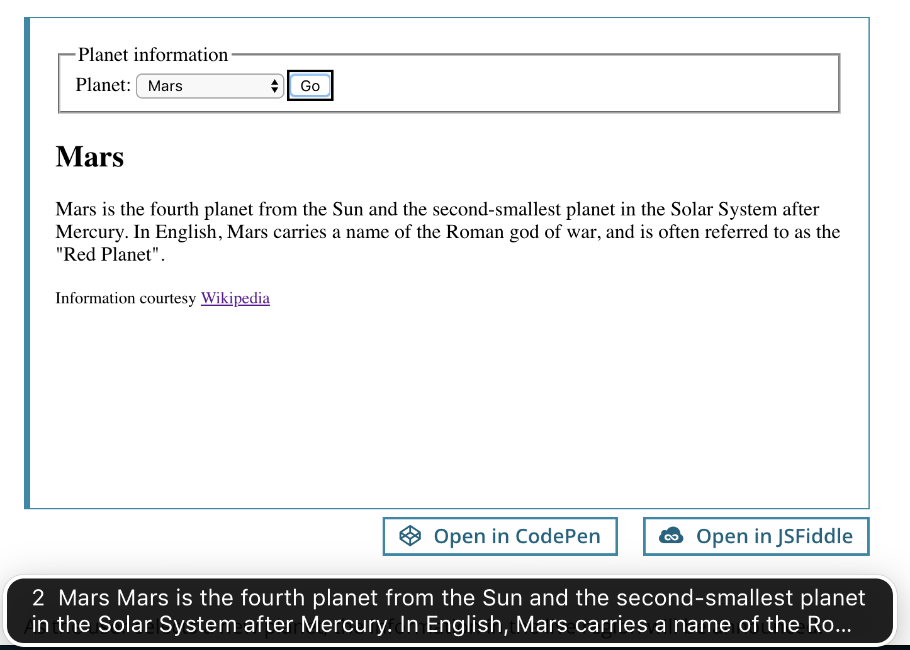

ARIA live regions
Using JavaScript, it is possible to dynamically change parts of a page without requiring the entire page to reload — for instance, to update a list of search results on the fly, or to display a discreet alert or notification which does not require user interaction. While these changes are usually visually apparent to users who can see the page, they may not be obvious to users of assistive technologies. ARIA live regions fill this gap and provide a way to programmatically expose dynamic content changes in a way that can be announced by assistive technologies.
Note:
Assistive technologies will generally only announce dynamic changes in the content of a live region.
Including an aria-live attribute or a specialized live region role (such as role="status") on the element you want to announce changes to works as long as you add the attribute before the changes occur — either in the original markup, or dynamically using JavaScript. Start with an empty live region, then – in a separate step – change the content inside the region.
While not explicitly documented in the specification, browsers/assistive technologies do include special handling for role="alert": in most cases, the content inside role="alert" regions is announced, even when the region (which already contains the notification/message) is present in the initial markup of the page, or injected dynamically into the page. However, note that role="alert" regions are – depending on the specific browser/assistive technology combination – automatically prefixed with "Alert" when they are announced.
Live regions
Dynamic content which updates without a page reload is generally either a region or a widget. Simple content changes which are not interactive should be marked as live regions. A live region is explicitly denoted using the aria-live attribute.
aria-live: The aria-live=POLITENESS_SETTING is used to set the priority with which screen reader should treat updates to live regions - the possible settings are: off, polite or assertive. This attribute is by far the most important.
Normally, only aria-live="polite" is used. Any region which receives updates that are important for the user to receive, but not so rapid as to be annoying, should receive this attribute. The screen reader will speak changes whenever the user is idle.
aria-live="assertive" should only be used for time-sensitive/critical notifications that absolutely require the user's immediate attention. Generally, a change to an assertive live region will interrupt any announcement a screen reader is currently making. As such, it can be extremely annoying and disruptive and should only be used sparingly.
Unintuitively, aria-live="off" does not indicate that changes should not be announced. When an element has aria-live="off" (or has a role with this implicit value, such as role="marquee" or role="timer"), changes to the element's content are only supposed to be announced when focus is on, or inside, the element.
Basic example: Dropdown box updates useful onscreen information
A website specializing in providing information about planets provides a dropdown box. When a planet is selected from the dropdown, a region on the page is updated with information about the selected planet.
<fieldset>
<legend>Planet information</legend>
<label for="planetsSelect">Planet:</label>
<select id="planetsSelect" aria-controls="planetInfo">
<option value="">Select a planet…</option>
<option value="mercury">Mercury</option>
<option value="venus">Venus</option>
<option value="earth">Earth</option>
<option value="mars">Mars</option>
</select>
<button id="renderPlanetInfoButton">Go</button>
</fieldset>
<div role="region" id="planetInfo" aria-live="polite">
<h2 id="planetTitle">No planet selected</h2>
<p id="planetDescription">Select a planet to view its description</p>
</div>
<p>
<small>
Information from
<a href="https://en.wikipedia.org/wiki/Solar_System">Wikipedia</a>
</small>
</p>
const PLANETS_INFO = {
mercury: {
title: "Mercury",
description:
"Mercury is the smallest and innermost planet in the Solar System. It is named after the Roman deity Mercury, the messenger to the gods.",
},
venus: {
title: "Venus",
description:
"Venus is the second planet from the Sun. It is named after the Roman goddess of love and beauty.",
},
earth: {
title: "Earth",
description:
"Earth is the third planet from the Sun and the only object in the Universe known to harbor life.",
},
mars: {
title: "Mars",
description:
'Mars is the fourth planet from the Sun and the second-smallest planet in the Solar System after Mercury. In English, Mars carries a name of the Roman god of war, and is often referred to as the "Red Planet".',
},
};
function renderPlanetInfo(planet) {
const planetTitle = document.querySelector("#planetTitle");
const planetDescription = document.querySelector("#planetDescription");
if (planet in PLANETS_INFO) {
planetTitle.textContent = PLANETS_INFO[planet].title;
planetDescription.textContent = PLANETS_INFO[planet].description;
} else {
planetTitle.textContent = "No planet selected";
planetDescription.textContent = "Select a planet to view its description";
}
}
const renderPlanetInfoButton = document.querySelector(
"#renderPlanetInfoButton",
);
renderPlanetInfoButton.addEventListener("click", (event) => {
const planetsSelect = document.querySelector("#planetsSelect");
const selectedPlanet =
planetsSelect.options[planetsSelect.selectedIndex].value;
renderPlanetInfo(selectedPlanet);
});
As the user selects a new planet, the information in the live region will be announced. Because the live region has aria-live="polite", the screen reader will wait until the user pauses before announcing the update. Thus, moving down in the list and selecting another planet will not announce updates in the live region. Updates in the live region will only be announced for the planet finally chosen.
Here is a screenshot of VoiceOver on Mac announcing the update (via subtitles) to the live region:

Roles with implicit live region attributes
Elements with the following role="…" values act as live regions by default:
| Role | Description | Compatibility Notes |
|---|---|---|
| log | Chat, error, game or other type of log | To maximize compatibility, add a redundant aria-live="polite" when using this role. |
| status | A status bar or area of the screen that provides an updated status of some kind. Screen reader users have a special command to read the current status. | To maximize compatibility, add a redundant aria-live="polite" when using this role. |
| alert | Error or warning message that flashes on the screen. Alerts are particularly important for client side validation notices to users. Alert Example. | To maximize compatibility, some people recommend adding a redundant aria-live="assertive" when using this role. However, adding both aria-live and role="alert" causes double speaking issues in VoiceOver on iOS. |
| progressbar | A hybrid between a widget and a live region. Use this with aria-valuemin, aria-valuenow and aria-valuemax. (TBD: add more info here). |
|
| marquee | Text which scrolls, such as a stock ticker. | |
| timer | Any kind of timer or clock, such as a countdown timer or stopwatch readout. |
Additional live region attributes
Live Regions are well supported. Vispero, in 2014, posted information about the state of the support of Live Regions. Paul J. Adam has researched the support of aria-atomic and aria-relevant in particular.
-
aria-atomic: Thearia-atomic=BOOLEANis used to set whether or not the screen reader should always present the live region as a whole, even if only part of the region changes. The possible settings are:falseortrue. The default setting isfalse. -
: The
aria-relevant=[LIST_OF_CHANGES]is used to set what types of changes are relevant to a live region. The possible settings are one or more of:additions,removals,text,all. The default setting is:additions text.
Basic examples: aria-atomic
As an illustration of aria-atomic, consider a site with a basic clock, showing hours and minutes. The clock is updated each minute, with the new remaining time overwriting the current content.
<div id="clock" role="timer" aria-live="polite">
<span id="clock-hours"></span>
<span id="clock-mins"></span>
</div>
/* basic JavaScript to update the clock */
function updateClock() {
const now = new Date();
document.getElementById("clock-hours").textContent = now.getHours();
document.getElementById("clock-mins").textContent =
`0${now.getMinutes()}`.slice(-2);
}
/* first run */
updateClock();
/* update every minute */
setInterval(updateClock, 60000);
The first time the function executes, the entirety of the string that is added will be announced. On subsequent calls, only the parts of the content that changed compared to the previous content will be announced. For instance, when the clock changes from "17:33" to "17:34", assistive technologies will only announce "34", which won't be very useful to users.
One way around this would be to first clear all the contents of the live region (in this case, set the innerHTML of both <span id="clock-hours"> and <span id="clock-mins"> to be empty), and then inject the new content. However, this can sometimes be unreliable, as it's dependent on the exact timing of these two updates.
aria-atomic="true" ensures that each time the live region is updated, the entirety of the content is announced in full (e.g., "17:34").
<div id="clock" role="timer" aria-live="polite" aria-atomic="true">…</div>
Another example of aria-atomic - an update/notification made as a result of a user action.
<div id="date-input">
<label for="year">Year:</label>
<input type="text" id="year" value="1990" />
</div>
<div id="date-output" aria-atomic="true" aria-live="polite">
The set year is:
<span id="year-output">1990</span>
</div>
function change(event) {
const yearOut = document.getElementById("year-output");
switch (event.target.id) {
case "year":
yearOut.textContent = event.target.value;
break;
}
}
document.getElementById("year").addEventListener("blur", change);
Without aria-atomic="true" the screen reader announces only the changed value of year. With aria-atomic="true", the screen reader announces "The set year is: changed value"
Basic example: aria-relevant
With aria-relevant you can specify which types of changes/updates to a live region should be announced.
As an example, consider a chat site that wants to display a list of users currently logged in. Rather than just announcing the users that are currently logged in, we also want to trigger an announcement specifically when a user is removed from the list. We can achieve this by specifying aria-relevant="additions removals".
<ul id="roster" aria-live="polite" aria-relevant="additions removals">
<!-- use JavaScript to add and remove users here -->
</ul>
Breakdown of ARIA live properties:
aria-live="polite"indicates that the screen reader should wait until the user is idle before presenting updates to the user. This is the most commonly used value, as interrupting the user with "assertive" might interrupt their flow.aria-atomicis not set (falseby default) so that only the added or removed users should be spoken and not the entire roster each time.aria-relevant="additions removals"ensures that both users added or removed to the roster will be spoken.